Legacy claim — Import from youzign.com, tested end to end.
The dashboard's "Import from youzign.com" card lets a returning user type their old email/username, browse a grid of their rescued legacy designs (from the 2015-era Youzign, DEZ-73), pick which ones they want, and pull them onto this device. Backend was already deployed and verified in isolation; this pass drives the real editor UI end to end against the live edge function and a seeded test account. Newest first.
Plan not started ·
WIP in progress ·
Done built/verified ·
Blocked needs input
Repo ~/Projects/dev/youzign-next · editor dev server localhost:5191 · e2e script scripts/e2e-legacy-import.mjs · shots in legacy-claim-shots/ · data rescue background in ../LEGACY-DATA-RESCUE.md
2026-07-16 · re-run after font / clipart / id-namespacing fixes (qa5)Done
QA5 — 15/7/4 → 16 MATCH / 8 MINOR / 2 BROKEN of 26
What changed: three more render-pipeline fixes landed since qa4 — (1) self-hosted legacy fonts in apps/editor/public/legacy-fonts/, (2) .swf → bundled-SVG clipart resolution, and (3) renderer SVG id-namespacing. This QA5 pass re-imports the exact same 26 designs (still read straight from qa3-results.json by title/design_id, per account, so the sample never drifts) through the newly-fixed pipeline and re-judges each canvas against its qa3 server thumbnail with the same MATCH/MINOR/BROKEN rules. Sanity gates green first: full test suite (408 tests across renderer 24 / editor-core 196 / editor 188) and pnpm -r build both passed (build's only warning is the benign >500 kB chunk-size notice). Scripts: scripts/e2e-qa5.mjs + scripts/e2e-qa5-recapture.mjs (2400×2800 viewport for large canvases), each run against a fresh throwaway Chrome profile so nothing from a prior run lingered in IndexedDB/cache. Plumbing again solid: 26/26 imported, 0 hard failures, only the two 2015 gen-1 designs warned about missing images (same server-side asset gap as qa3/qa4).
ISSPWhichTypeofAccount's body text no longer overflows/overlaps — the mapped display faces now load locally, so line-heights are correct and every paragraph is legible (BROKEN → MINOR).
2 · .swf → bundled-SVG clipart resolution
Boxroom Business Card's black swoosh + red social icons now render (were dropped in qa4); ISSPWhich's divider rules now draw as lines instead of placeholder boxes.
3 · Renderer SVG id-namespacing
No cross-design gradient/clip bleed observed; all previously-passing MATCH/MINOR designs held with zero regressions across the 26.
Verdict
qa3
qa4
qa5
MATCH
9
15
16
MINOR
8
7
8
BROKEN
9
4
2
The only two verdict moves since qa4 (account · title · qa4 → qa5) — both upgrades, no regressions anywhere else:
Account
Design
qa4
qa5
imgllc
ISSPWhichTypeofAccount
❌ BROKEN
✅ MINOR
7YgkgPFJ
Boxroom Business Card
❌ BROKEN
✅ MATCH
Zero regressions: all 15 qa4-MATCH designs stayed MATCH and all 7 qa4-MINOR designs stayed MINOR. The self-hosted-font fix cleared ISSPWhich's text overlap (now a clean MINOR — divider clipart renders as thin rules vs the thumb's thicker ellipses, and the display font is a near-match substitute), and the clipart fix restored Boxroom Business Card's black swoosh and red social icons (now a faithful MATCH).
2 designs still BROKEN — hand-off detail for engineering:
Inform (imgllc, gen3/json, design_id 13406389) — the note/pencil icon renders cleanly, but the canvas still opens at 320×225 instead of 1000×1000. This is the same canvas-size bug flagged in qa3/qa4, untouched by the font/clipart/id fixes. Designstring: legacy-claim-shots/qa3/designstrings/imgllc-gen3-13406389.txt.
snatchems beerfest pod (7YgkgPFJ, gen3/json, design_id 14603375) — photo, Golden Ball Hotel logo and body copy all render, but the "mid-week stay in a luxury" heading still renders far too large in a fallback face and overlaps the body paragraph. The heading font specifically is still unmapped (distinct from the ISSPWhich faces that the self-hosted set now covers). Designstring: legacy-claim-shots/qa3/designstrings/7YgkgPFJ-gen3-14603375.txt.
Before → after (left = qa4 canvas, right = qa5 canvas) for the two changed designs plus the flagged watch-items:
ISSPWhichTypeofAccount — BEFORE (qa4): .swf dividers + font overlap (BROKEN)
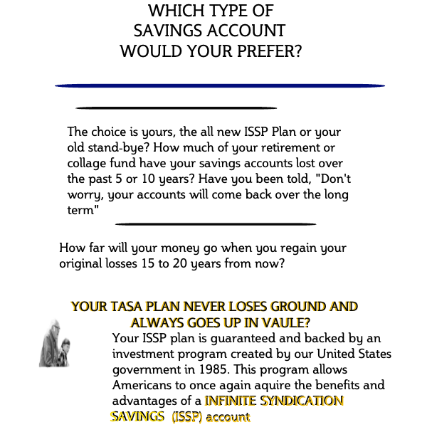
✅ AFTER (qa5): text legible, no overlap, dividers draw as rules — MINOR
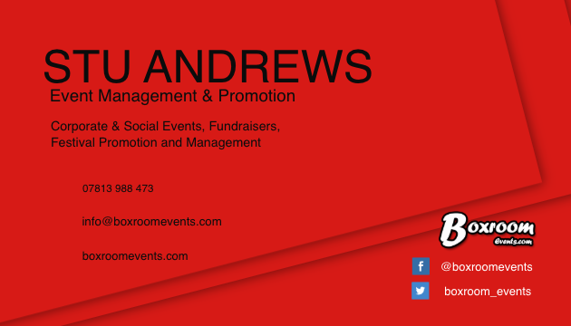
Boxroom Business Card — BEFORE (qa4): black swoosh + red icons missing (BROKEN)✅ AFTER (qa5): swoosh + fb/twitter icons + logo all render — MATCHInform — BEFORE (qa4): canvas 320×225 vs 1000×1000 (BROKEN)
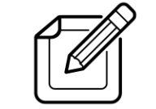
❌ AFTER (qa5): icon clean but canvas still 320×225 — still BROKEN (canvas-size bug)
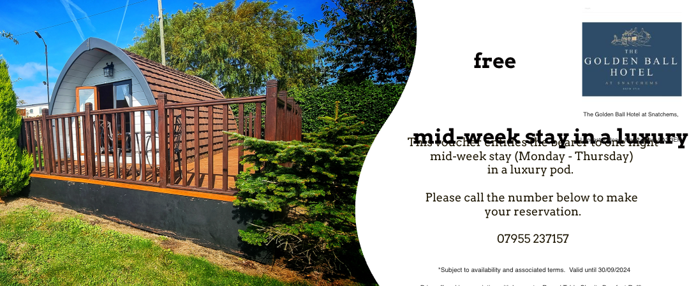
snatchems — BEFORE (qa4): heading overlaps body (BROKEN)❌ AFTER (qa5): heading font still unmapped, still overlaps body — still BROKEN
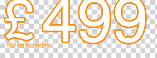
Esell price banner — BEFORE (qa4): outline numerals, partial fill (MINOR)AFTER (qa5): unchanged — £499 renders, some glyphs fill-vs-outline — MINOR
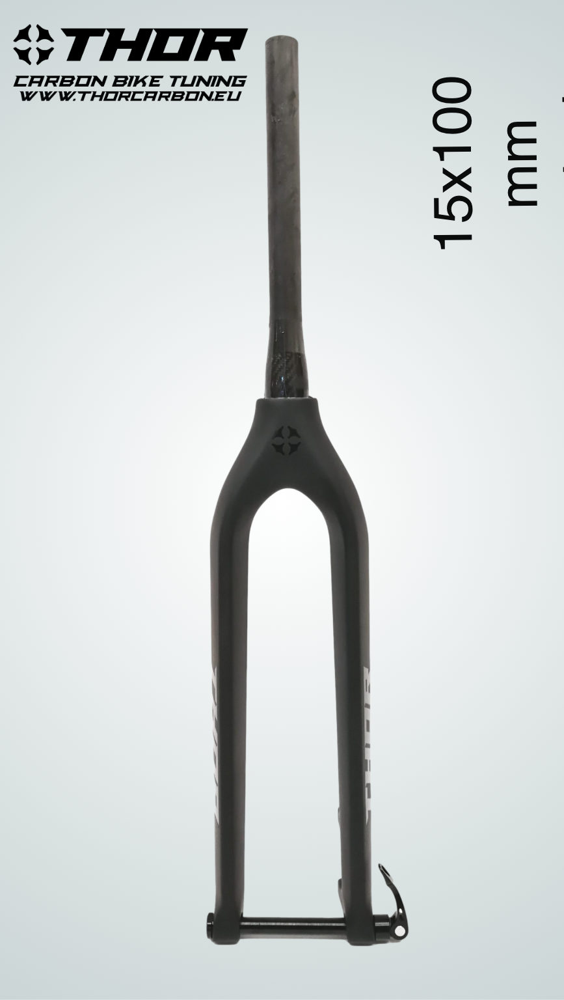
15×100 mtb vork — BEFORE (qa4): rotated text renders, font sub (MINOR)
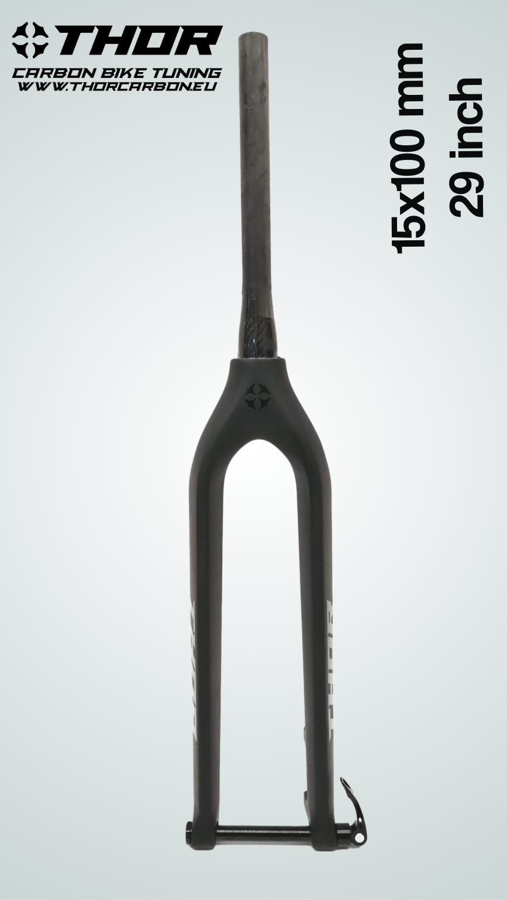
AFTER (qa5): unchanged — THOR logo + fork photo + rotated "15x100 mm / 29 inch" all render — MINOR
Bottom line: the three new fixes cleared two more of the four remaining qa4 failures with no regressions — BROKEN is down to 2 of 26 (Inform, snatchems) and MATCH+MINOR now covers 24/26 (~92%). The two stragglers are narrow, known, and degrade legibly: one canvas-size bug (Inform) and one still-unmapped heading font (snatchems). Recommend fixing those two before a broad "import all your old designs" announcement; the feature is comfortably safe for soft / opt-in rollout now.
2026-07-16 · re-run after 4 render fixes (qa4)Done
Re-QA after the fixes — 9/8/9 → 15 MATCH / 7 MINOR / 4 BROKEN of 26
What changed: four render-pipeline fixes landed in the working tree since the qa3 pass. This run re-imports the exact same 26 designs (read straight from qa3-results.json by title, per account) through the fixed pipeline and re-judges each canvas against its server thumbnail with the same MATCH/MINOR/BROKEN rules. Full test suite (169 tests, 21 files) and pnpm -r build were both green before the visual pass. Script: scripts/e2e-qa4.mjs + scripts/e2e-qa4-recapture.mjs (2400×2800 viewport for tall canvases), run against a fresh throwaway Chrome profile each time so nothing from qa3 lingered in IndexedDB/cache and every design re-imported cleanly. Plumbing again solid: 26/26 imported, 0 hard failures, only the two 2015 gen-1 designs warned about missing images (same as qa3, server-side asset gap).
Biggest win. OMS flyer blue shapes are blue again, Boxroom Pineapple correct, DJ Mike Pelsis 2 box now grey (#858585) not slate-blue, HiQ voucher's 21 source-less cliparts now render nothing instead of a placeholder column.
2 · Legacy font loader (Google-Fonts-mappable names now load)
Unl eng v spain now renders in condensed uppercase (BebasNeue mapped) — was a lowercase sans fallback. Sales 3 red heading now correct. Proprietary/unmappable fonts still fall back (expected).
3 · Rotated-text AABB placement
15×100 mtb vork's rotated "15x100 mm / 29 inch" text now renders (was dropped entirely); slight upward position drift remains.
4 · Canvas img/svg CSS clamp removed
VirtualCombinationLock's full-canvas dial now fills 1027×1536 (was a left-edge sliver) — clean MATCH. Boxroom Pineapple photo no longer shifted.
5 of the 9 qa3-BROKEN designs are now passing (VirtualCombinationLock, Boxroom Pineapple, HiQ voucher → MATCH; 15×100 vork, OMS flyer → MINOR), plus 3 MINOR→MATCH upgrades (DJ Mike Pelsis 2, Sales 3, Unl eng v spain). No regressions among the qa3 MATCH/MINOR set (WW riserbar's blank centre matches its own server thumb — it's a logo/title card, not a dropped photo).
4 designs still BROKEN — hand-off detail for engineering:
ISSPWhichTypeofAccount (imgllc, gen3/xml, id 1189179) — the two divider cliparts still render as grey striped placeholders and the substituted heading font overlaps the body text at the bottom. Not a recolor case; the dividers appear to be .swf/Flash with no static source, and the heading font is unmappable.
Inform (imgllc, gen3/json, id 13406389) — icon now renders cleanly but the canvas still opens at 320×225 where the designstring says 1000×1000 (square, icon centred small). Canvas-dimension bug — not one of the 4 fixes, still outstanding.
Boxroom Business Card (7YgkgPFJ, gen3/xml, id 7124137) — big improvement (red background restored, phantom "JHONNY DO" text gone), but the defining bold black swoosh graphic is absent and the red left-hand contact icons (phone/chat/home) don't render.
snatchems beerfest pod (7YgkgPFJ, gen3/json, id 14603375) — white arch is white now (recolor fixed), but the display heading ("mid-week stay in a luxury") still overlaps the body text — an unmappable heading font mis-sizes/mis-positions the text item.
Two themes remain: unmappable proprietary/display fonts causing text overlap (ISSPWhich, snatchems), and a couple of specific graphics that still don't render (Boxroom swoosh, ISSPWhich dividers). Raw designstrings for these are in legacy-claim-shots/qa3/designstrings/.
Known, expected gaps (not blockers): proprietary/display fonts with no Google-Fonts equivalent still fall back to a substitute (correct behaviour); .swf-only Flash cliparts with no static source render as nothing (correct); images that 404 server-side (the two 2015 Deandra designs) show an "Image unavailable" placeholder (correct, and warned to the user at import time).
Before → after for the 9 designs that were BROKEN in qa3 (left = qa3 canvas, right = qa4 canvas):
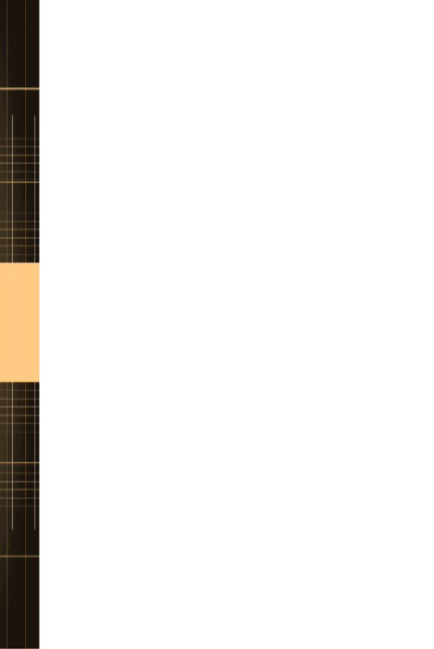
VirtualCombinationLock — BEFORE (qa3): left-edge sliver✅ AFTER (qa4): dial fills the canvas — MATCH
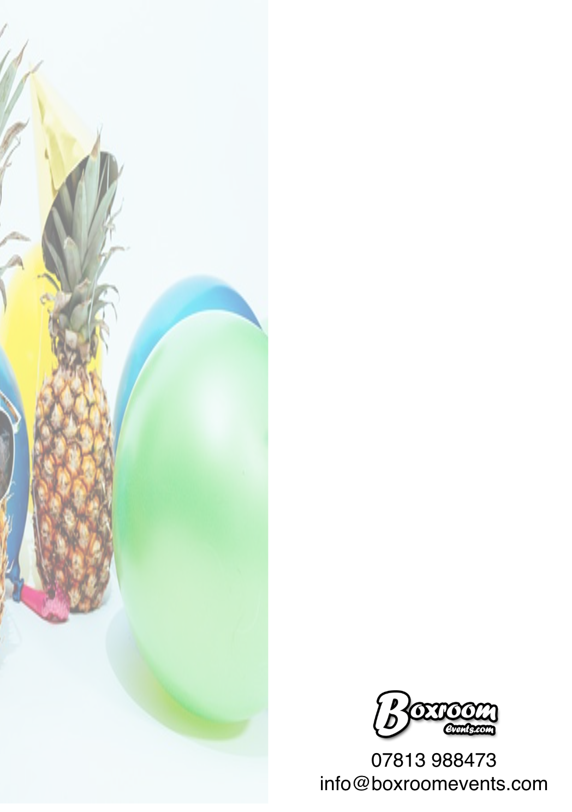
Boxroom Pineapple — BEFORE (qa3): shifted / faded✅ AFTER (qa4): correctly placed — MATCH
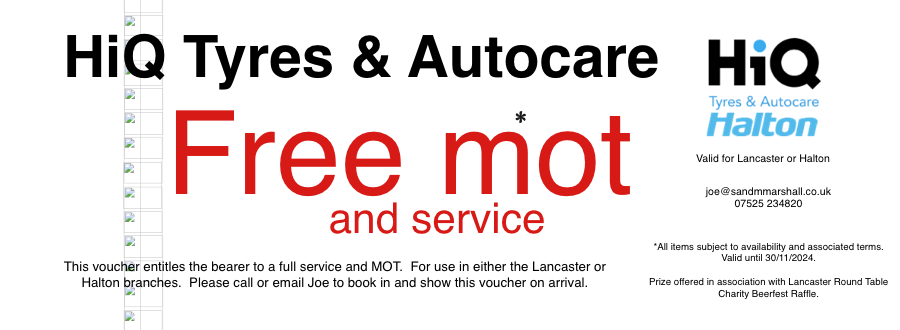
HiQ voucher — BEFORE (qa3): placeholder-clipart column
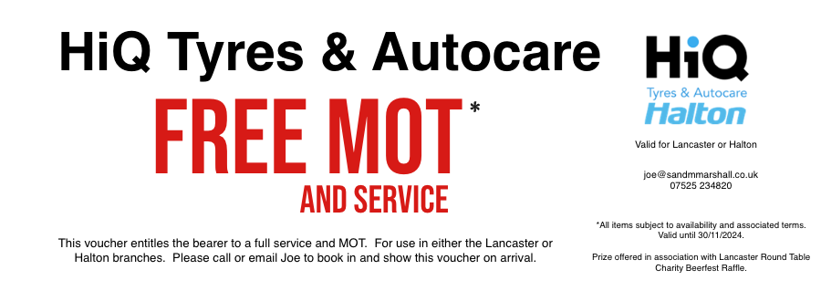
✅ AFTER (qa4): clean — source-less cliparts render nothing — MATCHOMS flyer — BEFORE (qa3): all blue shapes grey✅ AFTER (qa4): blue shapes blue again — MINOR (font sub)
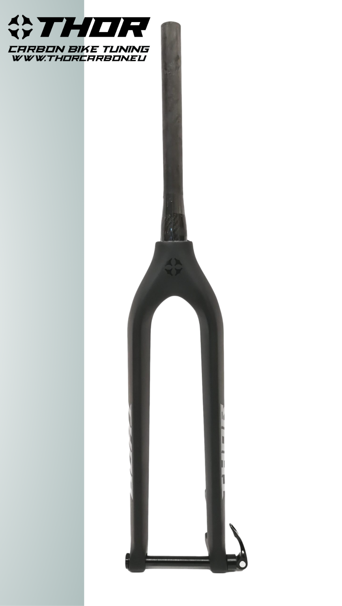
15×100 mtb vork — BEFORE (qa3): rotated text dropped✅ AFTER (qa4): rotated "15x100 mm" text renders — MINOR
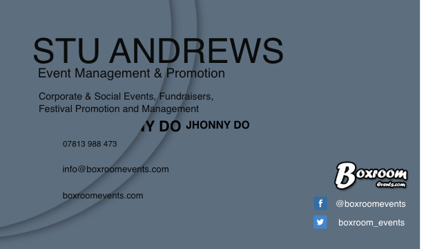
Boxroom Business Card — BEFORE (qa3): swoosh grey, phantom text❌ AFTER (qa4): red restored, phantom text gone — but black swoosh + red icons still missing (BROKEN)
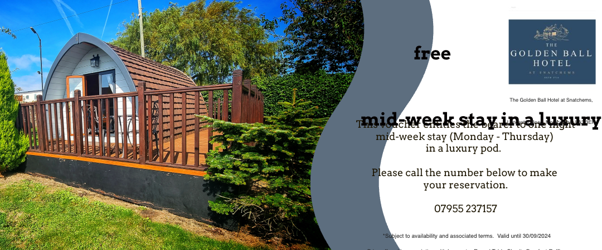
snatchems — BEFORE (qa3): arch grey + text overlap❌ AFTER (qa4): arch white now, but heading still overlaps body (BROKEN)
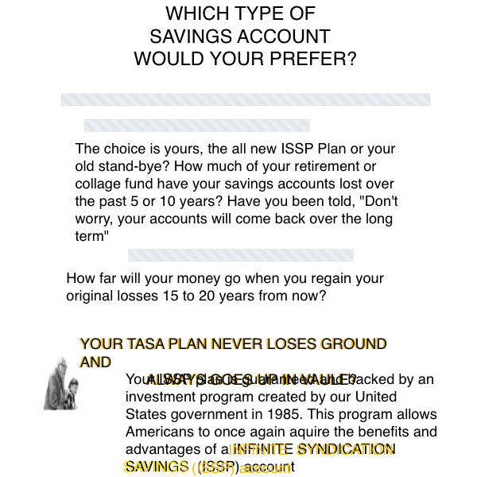
ISSPWhich — BEFORE (qa3): placeholder dividers + overlap❌ AFTER (qa4): essentially unchanged — .swf dividers + font overlap (BROKEN)
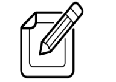
Inform — BEFORE (qa3): 320×225, icon mis-scaled❌ AFTER (qa4): icon clean but canvas still 320×225 vs 1000×1000 (BROKEN)
Bottom line: the four fixes work and materially improve fidelity — BROKEN dropped from 9 to 4 (of 26), MATCH rose from 9 to 15. The clipart-recolor and font-loader fixes are the big movers. Remaining 4 BROKEN split into one canvas-size bug (Inform), two unmappable-font text-overlap cases (ISSPWhich, snatchems), and one still-missing graphic (Boxroom swoosh). Recommend fixing the canvas-size bug + the two overlap cases before a broad "import your old designs" announcement; the feature is safe for a soft/opt-in rollout now given ~85% of sampled designs render acceptably (MATCH+MINOR) and failures degrade legibly rather than crashing.
2026-07-16 · visual QA, 3 real customer accountsBlocked
Render-fidelity QA against real customer designs — 9 MATCH / 8 MINOR / 9 BROKEN of 26
Setup: three seeded REAL customer accounts on the new live backend — imgllc (426 designs, v1+v2+v3, XML+JSON), mackcarbon (109, v3), 7YgkgPFJ (253, v3). Per account: grid screenshot (server thumbnails = ground truth), a mixed sample of ~9 designs imported through the real UI (node scripts/e2e-qa3.mjs), each opened in the editor and its canvas screenshotted next to the server thumbnail (pairs in legacy-claim-shots/qa3/pairs/). Tall canvases recaptured with a 2400×2800 viewport (scripts/e2e-qa3-recapture.mjs) after the first pass baked editor UI into element shots.
The plumbing is solid: 26/26 selected designs imported with 0 hard failures, and only ONE design pair produced "images couldn't be downloaded" warnings (the two 2015 gen-1 designs, 2 images each) — the server rescue clearly worked. The problem is render fidelity:
Deandra ×2 (missing imgs, warned; no server thumb), Kindle cover e, DJ Mike Pelsis 2, Sales 3, BOTTLE CAGES, Esell banner, Unl eng v spain
BROKEN
9
ISSPWhichTypeofAccount, Inform, VirtualCombinationLockContactUS, 15x100 mtb vork, Boxroom Pineapple, Boxroom Business Card, HiQ beerfest voucher, snatchems beerfest pod, OMS flyer back
Four systemic bugs behind the BROKEN column (raw designstrings for every affected design saved in legacy-claim-shots/qa3/designstrings/):
Clipart recolor is not applied — SVG cliparts render in the asset's default slate-gray instead of the stored color. Evidence: OMS flyer (all blue shapes → gray), Boxroom Business Card (red/black swoosh → gray), snatchems (white arch → gray), DJ Mike Pelsis 2 (stored #858585, renders blue). Hits XML and JSON eras alike — the single biggest fidelity killer.
Legacy fonts not loaded/mapped — BebasNeue, Coolvetica, SteinemRoman, Yanone, Cooper et al fall back to a plain sans, changing case (all-caps display fonts show lowercase), width and wrapping — causing text overlaps (snatchems, ISSPWhich).
JSON matrix placement still fails on some designs — VirtualCombinationLockContactUS (gen3 id 13626898): single 960×540 image, matrix scale 3.002 / x −934 should fill the 1027×1536 canvas (thumb confirms); renders as a thin sliver on the left edge.
Canvas size wrong on one JSON design — Inform (gen3 id 13406389): designstring says 1000×1000, editor opens it at 320×225 and the icon is mis-scaled relative to canvas.
Plus two smaller ones: a rotated text item dropped entirely (15x100 mtb vork), and source-less cliparts rendering as a visible column of placeholder icons (HiQ voucher — invisible in the original).
What already works well: photos download and place correctly in the majority of designs, multi-page-free XML layouts (logos + product shots + captions) are frequently pixel-faithful (see the Thor pairs), transparent canvases survive, and missing-image warnings are now rare (1 design pair of 26 vs "many" pre-rescue).
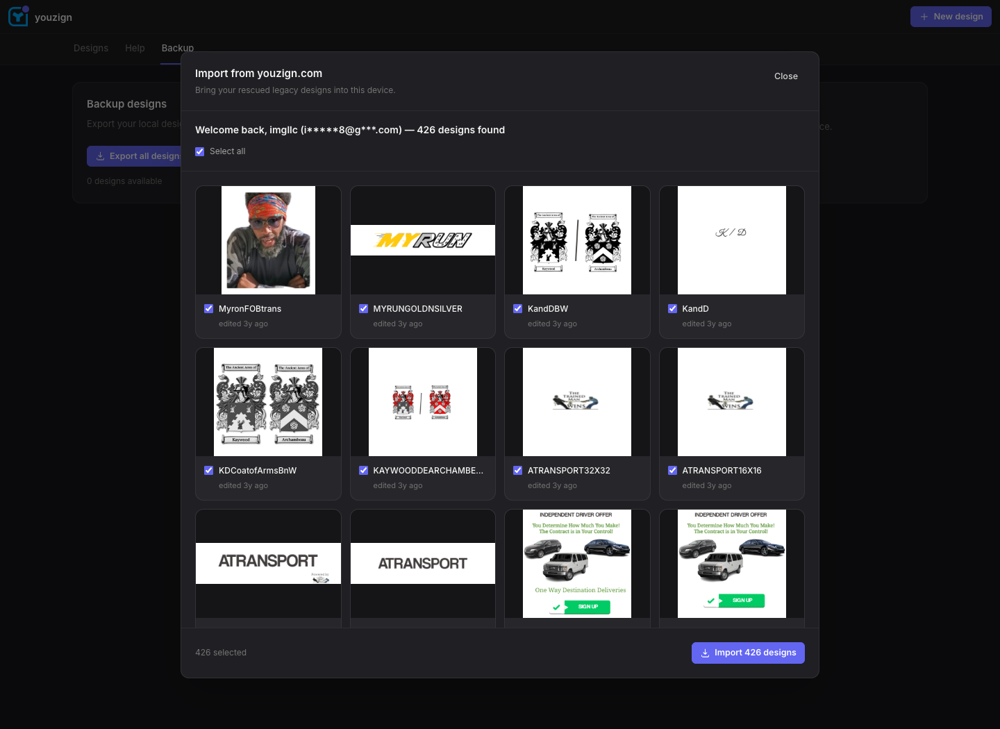
Grid — "Welcome back, imgllc — 426 designs found"
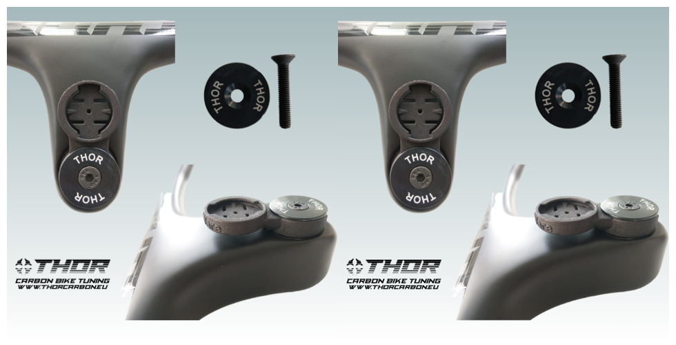
MATCH — Thor Hammer topcap (left thumb, right canvas): pixel-faithfulMATCH — SandJ security (JSON era)
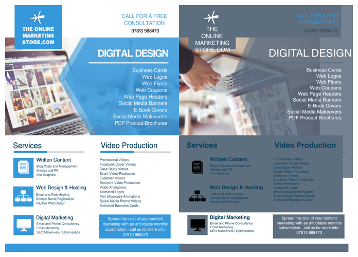
BROKEN — OMS flyer: perfect layout, ALL blue shapes render gray (recolor bug)
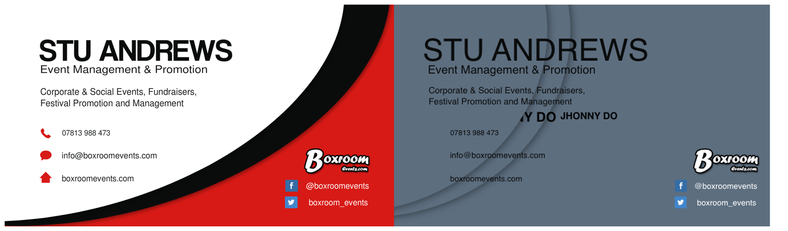
BROKEN — business card: red/black swoosh → gray, icons gone, hidden "JHONNY DO" text surfaces
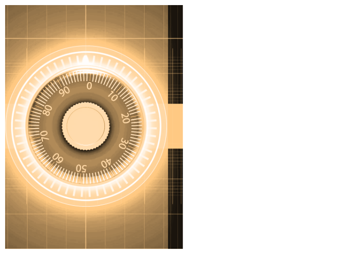
BROKEN — matrix placement: full-canvas image renders as a left-edge sliver
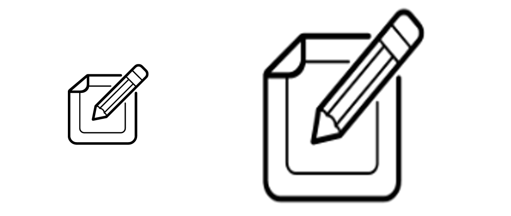
BROKEN — Inform: canvas 1000×1000 in data, opens at 320×225
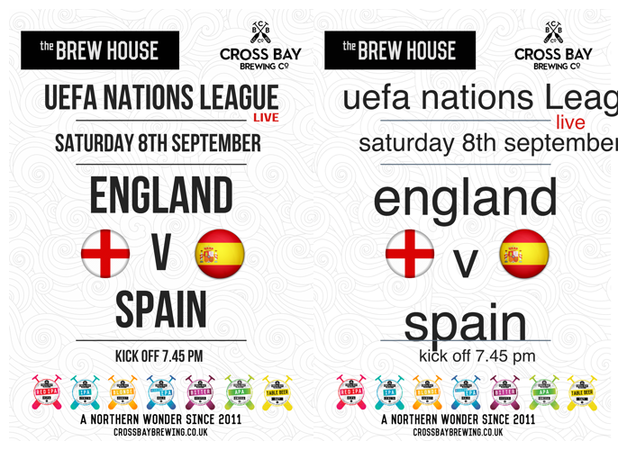
MINOR — layout perfect, BebasNeue falls back to lowercase plain sans
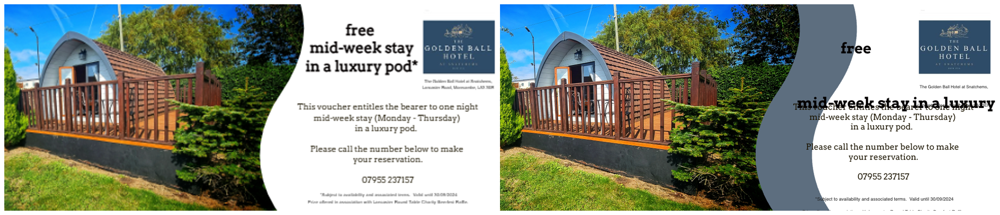
BROKEN — snatchems: arch white→gray + heading font fallback overlaps body text
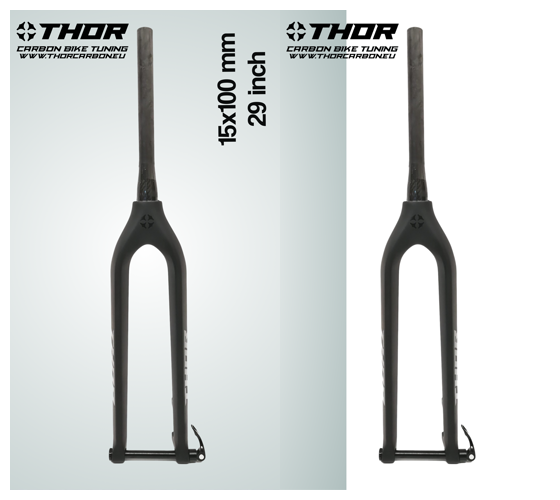
BROKEN — rotated "15x100 mm / 29 inch" text item dropped entirely
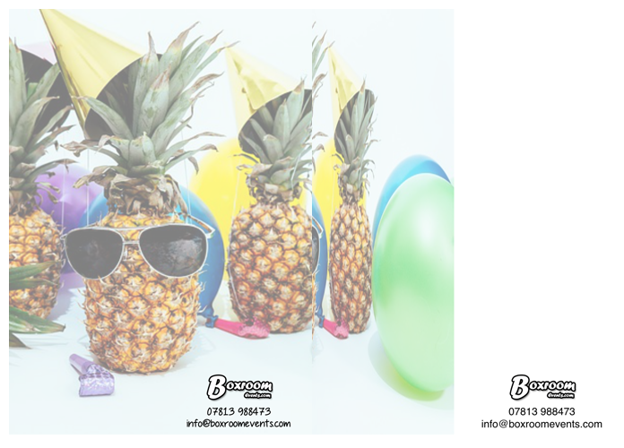
BROKEN — photo shifted left vs thumb (and 0.5 opacity honored from data while thumb is opaque)
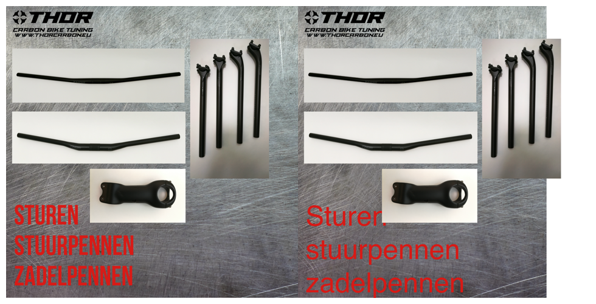
MINOR — Sales 3: everything renders, red heading font substituted
Bottom line: NOT safe to announce yet. Import plumbing + data rescue are done, but ~1 in 3 sampled designs opens visibly wrong. The clipart-recolor bug and the font fallback account for most of it and look very fixable; the matrix-sliver and canvas-size cases need the saved designstrings above.
2026-07-14 · e2e verifiedDone
Full flow driven in real Chrome against the live backend — 7/7 steps pass
Background: ~4,000 legacy designs across three Youzign generations were rescued from the pre-2018 AWS/WordPress stack ahead of account closure and copied into a Backblaze B2 bucket (youzign-archive, object keys mirroring the original AWS layout). The test account marketing / in@youzign.com was seeded with 58 v1 + 92 v2 + 1,210 v3 designs (1,360 total) for this pass. Full rescue recap: ../LEGACY-DATA-RESCUE.md.
Two bugs found and fixed during backend smoke testing (before this UI pass, already deployed):
Bug
Fix
Supabase query capped lookup results at 1,000 rows — the marketing account (1,360 designs) silently lost its last 360
Added pagination to the lookup query so it walks past the default row cap
Some v3 design thumbnail keys were stored without the x/ prefix the B2 layout expects, so those thumbs 404'd even though the object existed
SQL backfill adding the missing x/ prefix on affected v3 thumb keys
This pass — UI end to end (node scripts/e2e-legacy-import.mjs, real Chrome, live edge function, no mocks):
Pass — canvas paints real content (logo, text, graphic layers), not blank
Thumbnail load rate observed: of ~1,333 <img> thumbnails in the DOM at grid-load time (lazy/viewport-loaded subset), 53 had confirmed non-zero naturalWidth within the 3s sampling window used by the script — the rest were still off-screen/lazy or mid-fetch, not necessarily failed. Visual inspection of the rendered grid (screenshot 03) shows a healthy mix of real thumbnails with only the expected occasional placeholder icon for missing assets — consistent with "some 404 → placeholder is OK."
Anomaly — one hard import failure: of the 5 selected designs, 4 imported cleanly (2 with only partial-asset warnings) and 1 ("dezygnaudit") failed outright rather than importing with a warning. Two other designs ("Storey 2", "Packaging Design Back") imported successfully but logged missing-image warnings — expected for pre-2018 Flash-clipart designs per the known .swf-rendering limitation noted in the data-rescue doc. The hard failure on "dezygnaudit" is worth a follow-up look (possibly a malformed/edge-case designstring for that one legacy record) but is a data-layer question, not a UI bug — not investigated further here per the "feature code is frozen" scope of this test pass.
Console noise, not bugs: CORS-blocked fetch errors when inlining a handful of legacy image assets from Backblaze B2 (expected — these become the "images couldn't be downloaded" warnings shown to the user) and pre-existing cross-origin Google Fonts CSS warnings during thumbnailing (same known noise seen in other e2e runs in this repo, unrelated to this feature).
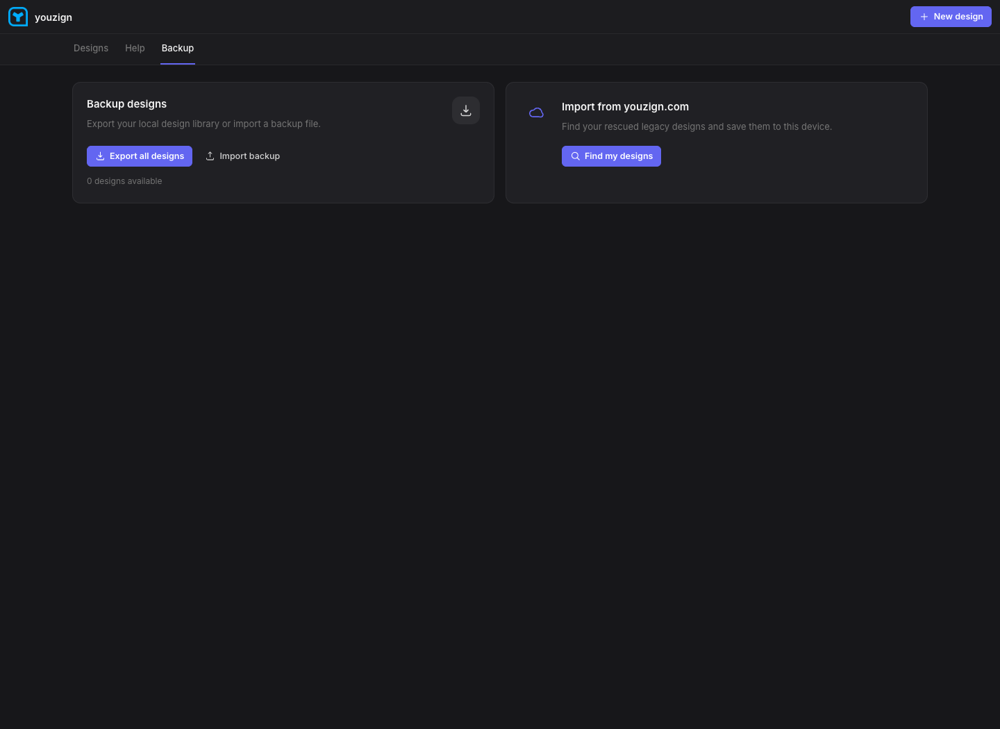
(a) Dashboard → Backup tab → "Import from youzign.com" card
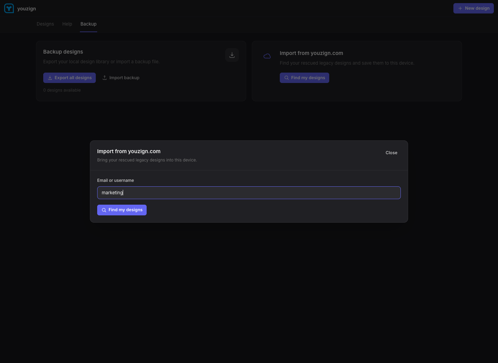
(b) Step 1 — identifier "marketing" entered
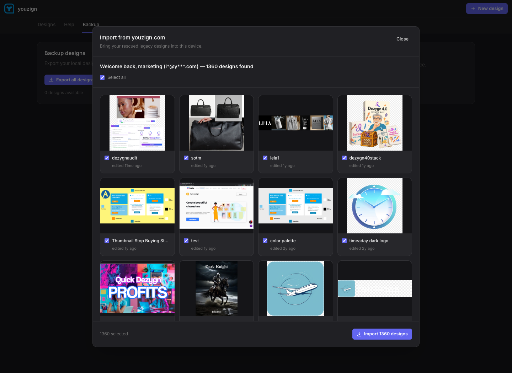
(c) Step 2 — "1360 designs found", real thumbnails rendering